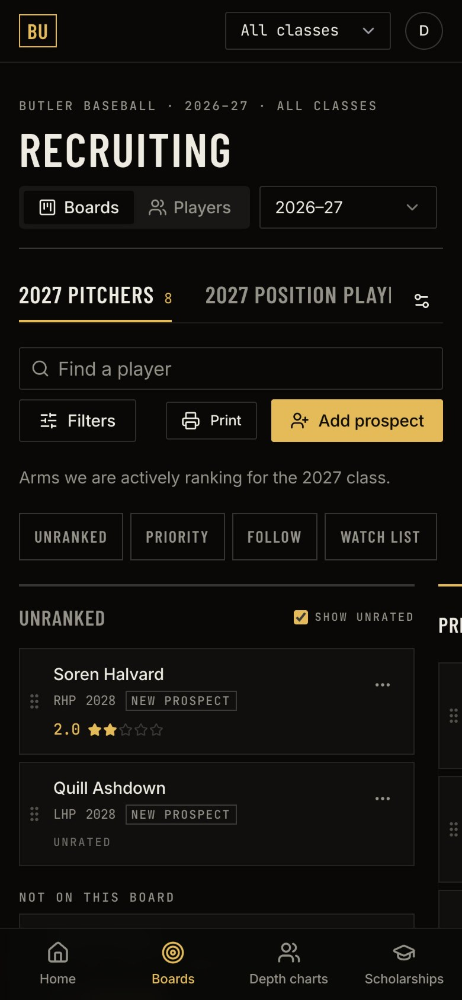

01 · Recruiting workspace
SelfScout
College
The whole recruiting picture for a college baseball staff in one workspace: who they like, where each player stands, who plays where next year, and what money is left.
- Built for
- Butler Baseball’s coaching staff
- Core screens
- Boards, depth charts, scholarships, player profiles
- Shown here
- Sample players only, no real recruits
Recruiting boards
Boards you drag

- TiersEach board has its own tiers, and the staff names them. Here it’s Priority, Follow and Watch List on the 2027 Pitchers board.
- RankingDrag up or down to re-rank inside a tier. Drag across to change the tier.
- CardsPosition, class, where he stands (Offer, Visit, Contacted) and a 1–5 star rating.
- Nobody lostUnrated players, and players not on the board yet, wait in the left column until someone places them.
- PrintAny board prints as a sheet for the staff meeting.
Depth chart
Drag a name, change the lineup

The roster sits on a field diagram beside a ranked list at every position. Tabs for 2027–28 and 2028–29 show the projected roster, seniors are flagged “may graduate,” and incoming players are marked.
Scholarship dashboard
What’s left to spend

The bar at the bottom splits this year’s money into committed, approved and still pending. A deal can carry a different amount each year, so the projection moves when an offer does.
Classes and profiles
Every player, one click deep


Ratings are entered by the staff, one tool at a time (hitting, power, running, fielding, arm, pitching, catching). A tool nobody has seen stays blank instead of getting a guess.
On a phone
Works in the dugout

On a phone the tiers become a jump bar, the columns go full width, and the touch targets get bigger. The same boards, built for a thumb.
Every name and number on this page is sample data, not a real recruit.